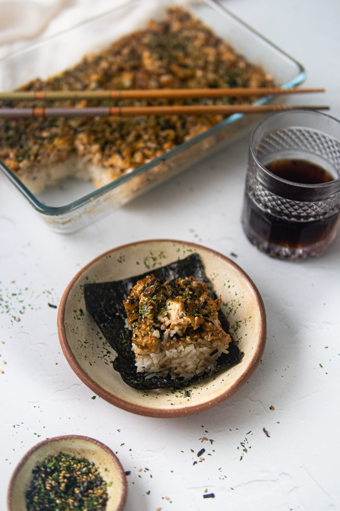

Vegan Sushi Bake

Description
Sushi bake, in short, is sushi in a form of a casserole
ingredients
- ⅓ cup vegan mayonnaise
- 1-2 tbsp chili garlic paste
- ½ tbsp agave or maple syrup
- ¼ cup vegan shredded cheese or vegan cream cheese
- 1 tsp garlic powder
- 1 tsp onion powder
- 1 tsp sesame oil
- kosher salt & black pepper to taste
- 4 large king oyster mushrooms chopped into small pieces
- 1/2 block (14oz) extra firm tofu (pressed) chopped into small pieces
- 2 stalks green onions thinly sliced
- 2 tsp toasted sesame seeds
- cooking oil for pan frying
- furikake mix
- kosher salt & pepper
- 3 cups short grain or Japanese rice cooked
- ¼ cup seasoned rice vinegar
- ½ tbsp granulated sugar
Directions
- Using a small mixing bowl, whisk together all ingredients such as the vegan mayonnaise, chili garlic paste, agave, vegan cheese, garlic/onion powder, sesame oil, and salt & pepper to taste. Whisk thoroughly until well combined.
- Preheat frying pan with a splash of oil (more or less a tablespoon) in medium heat.
- Once fully heated, pan fry small tofu cubes and season with salt and pepper all around. Pan fry until most sides ar golden brown and crisp. Set aside tofu on a separate bowl/plate once it is cooked all around.
- Using the same amount of heat, pan fry small cubed mushrooms until each side are golden brown on each side or until mushrooms start to sweat. Once cooked and shriveled into size, combine with tofu.
- Turn off heat. Now, combine chopped green onions and toasted sesame seeds with tofu and mushroom mix. Allow it to cool for about 10-15 minutes.
- Pour spicy mayonnaise mixture to the tofu / mushroom dry ingredients. Mix until all ingredients are well combined. Set aside OR store in an airtight container (and refrigerate) if you decide to make this topping in advance.
- Cook rice according to instructions provided on the packet.
- Once cooked, place in a mixing bowl and allow to cool off for 15-20 minutes before handling.
- Once rice is slightly cooled, combine rice vinegar, sugar, and salt to taste. Mix all together until sugar and vinegar has been thoroughly combined with rice
- Preheat oven to 400°F.
- In a baking dish, begin assembling the layers of the sushi bake, starting with the seasoned rice.
- Spread rice all throughout the baking dish using the back of a spatula, a spoon, or clean hands. If the rice is too sticky and unmanageable, dip the spatula / spoon, or hands in lukewarm water to dampen. Flatten the layer until it is compact.
- Season a generous layer of furikake flakes on top of the rice.
- Place the tofu and mushroom mayo topping as the last layer above the furikake flakes and rice. Spread in an even layer until all corners an sides are covered. Press with the back of a spatula or spoon to keep the layers compact.
- Place sushi bake in oven for 20-30 minutes or until edges has slightly crisp.
- Remove from the oven and sprinkle with the last layer of furikake flakes.
- Allow to cool before serving.
- To be enjoyed in squares or slices wrapped with nori sheets!
Back